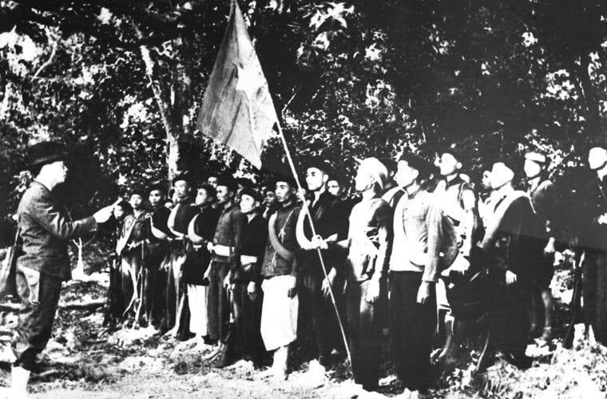
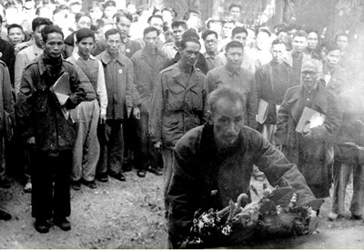

Sau ngày 2/9/1945, chính quyền Việt Nam Dân chủ Cộng hòa còn đứng trước tình thế "ngàn cân treo sợi tóc". Ở miền Bắc, quân Tưởng Giới Thạch tràn vào; ở miền Nam, quân Anh dọn đường cho thực dân Pháp quay trở lại. Cuộc kháng chiến chống Pháp nổ ra sớm nhất ở Nam Bộ (23/9/1945). Mặc dù có những thỏa hiệp ngoại giao (như Hiệp định Sơ bộ 6/3/1946), Pháp vẫn liên tiếp gây hấn, tạo ra những xung đột quân sự ngày càng căng thẳng trên khắp cả nước.
Trước tình hình đó, Chính phủ và Chủ tịch Hồ Chí Minh đã chủ trương phát động một phong trào sâu rộng trong toàn dân để chia sẻ gánh nặng với các gia đình có người hy sinh. Đây là cơ sở để Hội giúp binh sĩ tử nạn (sau đổi tên thành Hội giúp binh sĩ bị thương) được thành lập ở Thuận Hóa (Bình Trị Thiên) và nhanh chóng lan rộng.
Khi Cuộc Kháng chiến toàn quốc chính thức bùng nổ (19/12/1946), quy mô và tính chất ác liệt của chiến tranh tăng lên gấp bội, khiến số lượng thương binh, bệnh binh và gia đình liệt sĩ tăng đột biến. Điều này đòi hỏi Nhà nước phải có một hệ thống chính sách, chế độ đãi ngộ thống nhất, lâu dài, và mang tính pháp lý để đảm bảo cuộc sống cho thương binh và gia đình liệt sĩ.
Để tuyên truyền sâu rộng chính sách này và biến nó thành một phong trào thường niên, Bộ Quốc phòng và các tổ chức liên quan đã tổ chức hội nghị trù bị tại xóm Bàn Cờ, xã Hùng Sơn, huyện Đại Từ, tỉnh Thái Nguyên (nơi cơ quan Trung ương đóng quân). Tại hội nghị này, các đại biểu đã thống nhất chọn ngày 27 tháng 7 hàng năm làm Ngày Thương binh toàn quốc. Ngày này về sau trở thành Ngày Thương binh - Liệt sĩ.
Ngày 27/7/1947, lễ kỷ niệm Ngày Thương binh đầu tiên được tổ chức trọng thể. Nhân dịp này, Chủ tịch Hồ Chí Minh đã gửi thư đến toàn thể chiến sĩ và đồng bào cả nước, nâng tầm ý nghĩa của sự kiện lên thành đạo lý quốc gia.
"Thương binh là những người đã hy sinh xương máu để bảo vệ Tổ quốc, bảo vệ đồng bào... Họ đã làm trọn nhiệm vụ của một người công dân. Vì vậy, Tổ quốc và đồng bào phải biết ơn, phải giúp đỡ những người con anh dũng ấy."
Lời kêu gọi của Người đã biến Ngày Thương binh Liệt sĩ thành một ngày hội lớn của tình nghĩa, là dịp để toàn dân, từ cán bộ đến người dân thường, thể hiện lòng biết ơn bằng những hành động thiết thực. Ngày 27/7 không chỉ là ngày tưởng niệm mà còn là ngày kiểm điểm và đẩy mạnh công tác chăm sóc thương binh, gia đình liệt sĩ, duy trì truyền thống nhân văn cao cả của dân tộc Việt Nam.
